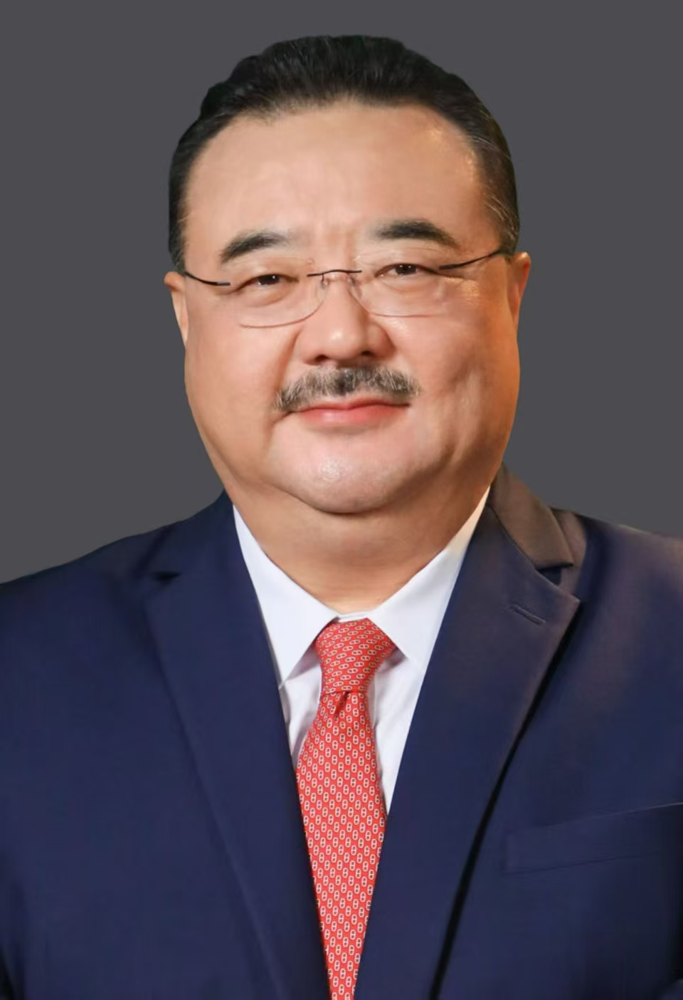

IEEE Cybermatics Congress 2025
Cybermatics Unleashed: Shaping the Future of Cyber-Physical Convergence
Zhengzhou, Henan, China
October 30- November 02, 2025
Keynote Speakers

M. Jamal Deen
Title: Integrating AI, Smart Sensors and Gait Towards Ubiquitous Healthcare
Affiliation: Distinguished University Professor, McMaster University, Canada
Abstract
The convergence of artificial intelligence (AI) and smart sensor technologies is revolutionizing healthcare by enabling real-time monitoring, personalized health interventions, and ambient assisted living. In this talk, I will present a comprehensive overview of AI-enabled smart systems across the domains of mobility analysis, smart medical homes, wearable telehealth platforms, and lifestyle management tools. I will then discuss a holistic view of a smart medical home ecosystem driven by sensor fusion, edge computing, and AI analytics that form the core of next-generation aging-in-place and daily activity monitoring. Central to this is the concept of a "brain" or and autonomic decision-making system that orchestrates data flow, interprets contextual information, and delivers intelligent outputs. A key focus of the talk will be our mobility and walking pattern analyzer, a multi-sensor AI-based system that assesses gait and mobility patterns in real-time, empowering early gait diagnostics and rehabilitation tracking. I will also introduce the smart living diary, a multi-modal interface aggregating activity, nutrition, and sleep data to promote healthy lifestyle. Next, I will highlight the growing role of wearable telehealth devices and how AI augments their predictive and diagnostic capabilities. Trends in ubiquitous healthcare and sensor performance will be discussed, alongside ethical and interoperability challenges. The presentation will conclude with a forward-looking perspective on the future of AI-enabled healthcare, emphasizing the need for standardized frameworks, inclusive design, robust privacy-preserving mechanisms and future pathways for research and implementation in smart healthcare systems.
Bio
Dr. M. Jamal Deen is Distinguished University Professor and Director of the Micro- and Nano-Systems Laboratory at McMaster University. His current research interests are nanoelectronics, optoelectronics, nanotechnology, data analytics and their emerging applications to health and environmental sciences. As an educator, he won the Ham Education Medal from IEEE Canada, the McMaster University President’s Award for Excellence in Graduate Supervision, and the MSU Macademics’ Lifetime Achievement Award (highest award at McMaster University voted by the students) for his exceptional dedication to teaching and significant contribution to student life, academia, and the community at large. Recently (2024), he was the inaugural winner of the SM Sze Education Award from the IEEE Electron Devices Society “For impact leadership and global dissemination of biosensor education in underprivileged regions.”
As an undergraduate student at the University of Guyana, Dr. Deen was the top ranked mathematics and physics student and the second ranked student at the university, winning the Chancellor’s gold medal and the Irving Adler prize. As a graduate student, he was a Fulbright-Laspau Scholar and an American Vacuum Society Scholar. His awards and honors include the Callinan Award as well as the Electronics and Photonics Award from the Electrochemical Society; a Humboldt Research Award from the Alexander von Humboldt Foundation; the Eadie Medal from the Royal Society of Canada; and the McNaughton Gold Medal, the Fessenden Medal and the Gotlieb Computer Medal, all from IEEE Canada. In addition, he was awarded the five honorary doctorate degrees in recognition of his exceptional research, scholarly and education accomplishments, exemplary professionalism and valued services.
Dr. Deen has been elected by his peers as Fellow/Academician of thirteen national academies and professional societies including The Royal Society of Canada - The Academies of Arts, Humanities and Sciences (the highest honor for academics, scholars and artists in Canada), the Chinese Academy of Sciences (China’s highest national honor in the area of science and technology and highest academic title), , the National Academy of Sciences India, the Canadian Academy of Engineering, IEEE, APS (American Physical Society) and ECS (Electrochemical Society). He served as the elected President of the Academy of Science, The Royal Society of Canada in 2015-2017. Recently, he was elected the inaugural Vice President (North) of The World Academy of Sciences, representing the developed countries. He was also elected to the Order of Canada, the highest civilian honor awarded by the Government of Canada.

Erol Gelenbe
Title: AI and Queueing Theory Combine Forces for the Detection and Mitigation of Cyberattacks
Affiliation: Institute of Theoretical & Applied Informatics, Polish Academy of Sciences, King’s College London & CNRS I3S, Université Côte d’Azur, Nice, France
Abstract
Gateway Servers for the Internet of Things, used in critical application areas such as the Internet of Vehicles and health monitoring, must meet stringent Security and Quality of Service (QoS) requirements, offering cyberattack protection with fast response and minimal loss of benign data. Therefore, it is vital to protect these systems with effective traffic shaping, accurate Attack Detection (AD) and Mitigation mechanisms. We will first demonstrate online and federated learning techniques that accurately detect attacks. Measurements of packet floods that convey a cyberattack will be shown to impair the QoS at the Gateways and impede their capability to carry out AD. Using Queueing Theory, we will show that the novel traffic shaping method QDTP will ensure that a Gateway can allow AD to operate promptly during an attack. A new Adaptive Attack Mitigation (AAM) system will be introduced to sample the incoming packet stream, determine whether an attack is ongoing, and dynamically drop batches of packets at the input to reduce the effects of the attack, and minimise the AD overhead and the cost of lost benign packets.
References: Our papers related to this talk appear in the IEEE Internet of Things Journal (2025), Internet of Things (Elsevier, 2024), Information Fusion (Elsevier, 2025), Computers and Industrial Engineering (Elsevier, 2024), Performance Evaluation (Elsevier, 2024), IEEE Trans. on Security and Information Forensics (2024), and IEEE Network (Online 2024, and 2025), IEEE Access 2022, 2023.
Bio
Erol Gelenbe is a Fellow of IEEE, ACM, IFIP, the Royal Statistical Society, the Institution of Engineering and Technology and other organizations. He graduated from METU (Ankara), received his PhD from the Tandon School of Engineering at New York University, and the Doctor of Science degree from Sorbonne University (Paris). He is an expert on System and Network Performance, Cybersecurity and AI. He proved basic mathematical performance results on page fault rates, random access channels, multi-path communications, and optimum database checkpoints, and was involved in the development of commercial performance tools such as QNAP2 and Flexsim. He invented G-Networks with product form solutions, the Random Neural Network, and introduced diffusion approximations for queueing systems with reflecting boundaries. A Professor at the Institute of Theoretical and Applied Informatics, Polish Academy of Sciences, he graduated over 90 PhDs and was awarded the honours of Chevalier de la Légion d’Honneur, Commander of Merit of France and Italy, Commander of the Order of the Crown of Belgium, and Officer of the Order of Merit of Poland. A Fellow of the National Academy of Technologies of France, of the Science Academies of Belgium, Poland and Turkey, Honorary Fellow of the Hungarian Academy of Sciences (Budapest) and the Islamic Academy of Sciences (Amman), he currently Chairs the Informatics Section of Academia Europaea. He won the ACM SIGMETRICS Lifetime Award, the Mustafa Prize, the Grand Prix France-Télécom of the French Science Academy, the IET Innovation Award (Oliver Lodge Medal), and other prizes, and was awarded Honoris Causa PhDs from the University of Rome II, the University of Liège, and the University of Bogaziçi in istanbul. He is an Honorary Professor of the University of Electronic Science and Technology of China.
Ljiljana Trajkovic
Title: Data Mining and Machine Learning for Analysis of Network Traffic
Affiliation:Simon Fraser University, Canada
Abstract
Collection and analysis of data from deployed networks is essential for understanding communication networks. Hence, data mining and statistical analysis of network data have been employed to determine traffic loads, analyze patterns of users' behavior, predict future network traffic, and detect traffic anomalies. The Internet has historically been prone to failures and attacks that significantly degrade its performance, affect the Internet connectivity, and cause routing disconnections. Frequent cases of various cyber threats have been encountered over the years and, hence, detection of anomalous behavior is a topic of great interest in cybersecurity. In described case studies, traffic traces collected by various collection sites are used to classify network anomalies. Various anomaly and intrusion detection approaches based on machine learning have been employed to analyze collected data. Deep learning, broad learning, gradient boosted decision trees, and reservoir computing algorithms were used to develop models based on collected datasets that contain Internet worms, viruses, power outages, ransomware events, router misconfigurations, Internet Protocol hijacks, and infrastructure failures in times of conflict. The reported results indicate that while performance of machine learning models greatly depends on the used datasets, they are viable tools for detecting the Internet anomalies.
Bio
Ljiljana Trajkovic received the Dipl. Ing. degree from University of Pristina, Yugoslavia, the M.Sc. degrees in electrical engineering and computer engineering from Syracuse University, Syracuse, NY, and the Ph.D. degree in electrical engineering from University of California at Los Angeles. She is currently a professor in the School of Engineering Science, Simon Fraser University, Burnaby, British Columbia, Canada. Her research interests include communication networks and dynamical systems. Dr. Trajkovic served as IEEE Division X Delegate/Director, President of the IEEE Systems, Man, and Cybernetics Society, and President of the IEEE Circuits and Systems Society. She serves as Editor-in-Chief of the IEEE Transactions on Human-Machine Systems. She is a Distinguished Lecturer of the IEEE Systems, Man, and Cybernetics Society and was a Distinguished Lecturer of the IEEE Circuits and System Society. She is a Fellow of the IEEE.
Dacheng Tao
Title: Deep Model Fusion
Affiliation:Distinguished University Professor, Nanyang Technological University, Singapore
Abstract
In recent years, we have witnessed a profound transformation in the learning paradigm of deep neural networks, especially in the applications of large language models and other foundation models. While conventional deep learning methodologies maintain their significance, they are now augmented by emergent model-centric approaches such as transferring knowledge, editing models, fusing models, or leveraging unlabeled data to tune models. Among these advances, deep model fusion techniques have demonstrated particular efficacy in boosting model performance, accelerating training, and mitigating the dependency on annotated datasets. Nevertheless, substantial challenges persist in the research and application of effective fusion methodologies and their scalability to large-scale foundation models. In this talk, we systematically present the recent advances in deep model fusion techniques. We provide a comprehensive taxonomical framework for categorizing existing model fusion approaches, and introduce our recent developments, including (1) weight learning-based model fusion and data-adaptive MoE upscaling, (2) subspace learning approaches to model fusion, and (3) enhanced multi-task model fusion incorporating pre- and post-finetuning to minimize representation bias between the merged model and task-specific models.
Bio
Dacheng Tao is currently a Distinguished University Professor and the Inaugural Director of the Generative AI Lab in the College of Computing and Data Science at Nanyang Technological University. He was an Australian Laureate Fellow and the founding director of the Sydney AI Centre at the University of Sydney, the inaugural director of JD Explore Academy and senior vice president at JD.com, and the chief AI scientist at UBTECH Robotics. He mainly applies statistics and mathematics to artificial intelligence, and his research is detailed in one monograph and over 300 publications. His publications have been cited over 140K times and he has an h-index 180+ in Google Scholar. He received the 2015 and 2020 Australian Eureka Prize, the 2018 IEEE ICDM Research Contributions Award, 2020 research super star by The Australian, the 2019 Diploma of The Polish Neural Network Society, and the 2021 IEEE Computer Society McCluskey Technical Achievement Award. He is a Fellow of the Australian Academy of Science, ACM and IEEE.
Toshiaki Miyazaki
Title: Demand-Addressable Sensor Network: Toward Flexible Acquisition of Desired Sensed Data in a Million-Class Sensor Network
Affiliation:Former President of the University of Aizu, Japan
Abstract
A new type of sensor network called the demand-addressable sensor network (DASN) is introduced. The DASN actively acquires the desired information by addressing user demands and delivers the information to appropriate destinations. This is in contrast to the conventional sensor networks that simply send sensed data to users. The DASN is useful for finding the desired information in a short duration of time from a large amount of sensed data generated by a large-scale sensor network. The DASN is constructed with a demand-addressable network that integrates many reconfigurable wireless sensor networks (RWSN) and scalable database system that can integrate one million of sensors. In addition, it has a mashup mechanism to combine other existing ICT systems or services, such as Google Maps and Twitter (now, X). The functions of the RWSN can be dynamically customized by injecting roles specified by the user. Thus, the user can actively get the desired information by customizing the sensor network function. The main application of the DASN is a wide-area disaster site monitoring, for which the DASN features outlined above are suitable. In this talk, the concept underlying the DASN, its architecture and implementation, and experimental results are presented.
Bio
Dr. Toshiaki Miyazaki is Former Chair of the Board of Executives and President of the University of Aizu, Fukushima, Japan (2020.4-2023.7). He held the following positions in the University of Aizu previously: Dean of the Undergraduate School of Computer Science and Engineering (2014.4-2020.3), Chair of Graduate Department of Computer and Information Systems (2008.4-2014.3), Director of Research Center for Advanced Information Science and Technology (CAIST) (2013.4-2014.3), Deputy Director of CAIST (2012.4-2013.3), and Deputy Director of the Revitalization Center (2013.4-2014.3). His research interests are in reconfigurable hardware systems, adaptive networking technologies, and autonomous systems. He received the B.E. and M.E. degrees in applied electronic engineering from the University of Electro-Communications, Tokyo, Japan in 1981 and 1983, and Ph.D. degree in electronic engineering from Tokyo Institute of Technology in 1994. Before joining the University of Aizu, he has been worked for NTT Laboratories for 22 years, and engaged in research on VLSI CAD systems, telecommunications-oriented FPGAs (Field Programmable Gate Arrays) and their applications, active networks, peer-to-peer communications, and ubiquitous network environments. Dr. Miyazaki was a visiting professor of the graduate school, Niigata University in 2004, and a part-time lecturer of the Tokyo University of Agriculture and Technology in 2003-2007. He published more than 400 technical papers and has 52 patents. He is a member of the Engineering Academy of Japan, and a senior member of IEEE, IPSJ, and IEICE.

Max Q.-H. Meng
Title: In the AI Era, Surgical Robots or Robotic Surgeries?
Affiliation:Southern University of Science and Technology, China
Abstract
Artificial intelligence and robotics are becoming an integral part of human life, and getting unparalleled attention recently. In this talk, we will discuss what is scenario intelligence in robotics based on our team's exploration and research, accumulation and practical applications in the field of AI and robotics in the past few decades. The topics discussed involves AI, humanoid robots and surgical robotics. Finally, a personal view of the future development of medical intelligence and surgical robotics is put forward, which leads to more creative perspectives and exploration directions.
Bio
Dr. Max Q.-H. Meng, Chair Professor and Head of the Department of Electronic and Electrical Engineering at SUSTech, is a Fellow of the Canadian Academy of Engineering and a Fellow of IEEE. He previously served as a tenured full professor at the University of Alberta in Canada, as well as a professor and department head in the Department of Electronic Engineering at The Chinese University of Hong Kong.
His research focuses on robotics perception and intelligence, with multiple research topics leading internationally. He has been ranked among the world’s top 2% of scientists by Stanford University for both his lifetime impact and 2024 annual impact. He has published over 1,000 academic papers, held over 40 patents, and delivered more than 200 plenary speeches at major international conferences. He has led over 60 research projects to completion with a total funding of some 100 million RMB, and has received more than 30 international and domestic awards and recognitions.
Prof. Meng serves as editor-in-chief or editorial board member for several leading journals, including being the founding Editor-in-Chief of the first-quartile English journal Biomimetic Intelligence and Robotics published by Elsevier. He has also chaired numerous international academic conferences, including serving as the General Chair for flagship conferences in robotics and automation: IEEE/RSJ IROS 2005 and IEEE ICRA 2021.
He is the Chief Scientist of RPAI Tech (Shenzhen) Co., Ltd., a unicorn company in the field of specialized surgical robotics.
Zheng Yan
Title: Decentralized Trust Management in Heterogeneous Networks with Privacy Preservation
Affiliation:Xidian University, China
Abstract
The next generation of networks (6G) will be inherently heterogeneous, integrating diverse network domains built on different technologies and operated by multiple providers. Managing trust in 6G presents significant challenges, including issues arising from network heterogeneity, trustless settings, cross-domain collaboration, trust evaluation, and privacy preservation. In this talk, I will present my team’s research on decentralized trust management in heterogeneous networks with privacy preservation, leveraging blockchain technologies. Our work offers concrete solutions such as secure end-to-end communication with privacy protection, decentralized network function management, privacy-preserving decentralized trust evaluation, and decentralized pseudonym and trust value management. A prototype system has been implemented on the open-source 5G core network platform Free5GC and delivered to a leading telecommunications company for further development.
Bio
Dr. Zheng Yan is currently a Distinguished Professor at Xidian University, China. She earned the Doctor of Science in Technology from Helsinki University of Technology. She is a Stanford World top 2% scientist, an Elsevier highly cited Chinese researcher, and a ScholarGPS World Top 0.05% Highly Ranked Scholar. Her research interests are in trust, security, privacy, and data analysis. She has published more than 450 papers in prestigious journals and conferences, with 298 as the first or corresponding author. She has authored two English books, used for teaching for nearly a decade. She invented 221 patents including 50 PCT patents, with more than150 patents adopted by industry, most of them are solely invented by her. Some of these patents have entered international standards and widely used. She has received numerous awards, including the Nokia Distinguished Inventor, IEEE TCSC Award for Excellence, IEEE TEMS Distinguished Leadership, N²Women Star in Computer Networking and Communications, three EU awards, two IEEE TC best journal paper awards, Shaanxi Natural Science Award, etc. She is currently a member of IEEE Fellow Committee. She serves as a Co-EiC of Information Sciences and an Area Editor/Associate Editor for 60+ esteemed journals. She founded the IEEE International Conference on Blockchain and serves as its Steering Committee Co-chair. She has contributed to more than 50 conferences as a General Chair or TPC Chair and delivered about 50 keynotes and invited talks. She is an External Member of Finnish Academy of Science and Letters, and a Fellow of IEEE, IET, AAIA, and AIIA.
Bin Hu
Title: Computational Psychophysiology and Mental Health
Affiliation:Beijing Institute of Technology, China
Abstract
In recent years, mental health issues have become increasingly prominent all of the world. According to the report from the World Health Organization, approximately 970 million people suffer from mental disorders, accounting for 13% of the global population. Currently, the diagnosis of mental illnesses primarily relies on physician interviews and Brief Psychiatric Rating Scale (BPRS), lacking objective and quantifiable diagnostic indicators. Besides, the common treatment of mental disorders is pharmacotherapy, which is often associated with significant side effects. The rapid advancement of cutting-edge artificial intelligence and big data technologies offers new opportunities for the diagnosis and treatment of mental disorders. These technologies are shifting the approach to data driven screening and treatment, offering more precise, personalized, and effective solutions. This report will introduce the opportunities and challenges in the field of medical electronics and computational methodologies for the diagnosis and treatment of mental disorders.
Bio
Bin Hu is a (Full) Professor and the Dean of the School of Medical Technology at Beijing Institute of Technology, China. He is a National Distinguished Expert, Chief Scientist of 973 as well as National Advanced Worker in 2020. He is a Fellow of IEEE/IET/AAIA and IET Fellow Assessor & Fellowship Advisor. He serves as the Editor-in-Chief for the IEEE Transactions on Computational Social Systems and an Associate Editor for IEEE Transactions on Affective Computing. He is one of Clarivate Highly Cited Researchers, World's Top 2% Scientists and 0.05% Highly Ranked Scholar from ScholarGPS.
Kim Fung Tsang
Title: Sustainability Driving Internet of Things and Standards
Affiliation:City University Hong Kong, China
Abstract
To advance sustainable urban development, a High Traffic Smart Metering architecture has been developed to address the increasing complexity of data management in densely populated city environments. As urban populations grow and energy demands intensify, smart metering presents a resource-efficient solution for accurately capturing, processing, and analyzing consumption data. This presentation traces the evolution of ZigBee architecture, emphasizing its progression toward Internet of Things (IoT) standards—particularly the Maturity Index for IoT (IDex). IDex offers globally recognized benchmarks for scalability, cybersecurity, and energy efficiency, guiding cities in deploying digital infrastructure that reduces environmental impact. By aligning with IDex, urban systems are empowered to proliferate data-driven decisions that support climate resilience, optimize resource use, and promote sustainable living.
Bio
Kim Fung TSANG is a Chief Scientist and Professor at the Shenzhen Institutes of Advanced Technology, Chinese Academy of Sciences, PRC. Renowned for his expertise in AIoT (Artificial Intelligence of Things) and smart technology applications, he has received prestigious accolades, including the IoT Heroes Award (2016) and the IEEE Product Safety Engineering Society Outstanding Achievement Award (2021).
KF plays a key role in shaping IoT standards and best practices and serves as a consultant to the Hong Kong Government. He is the architect of IEEE Standard 2668 Maturity Index for IoT (IDex), a novel IoT framework approved by IEEE in December 2022. Since its establishment, he has been actively assisting industries in adopting IDex, particularly through his collaboration with the Electrical and Mechanical Services Department (EMSD) to integrate IEEE 2668 into the government's GWIN system. His ultimate goal is to develop and proliferate IoT Best Practices globally. Additionally, he contributes to quality assurance in IoT systems by serving as an assessor for the Hong Kong Laboratory Accreditation Scheme (HOKLAS).
In alignment with IoT standardization, KF chairs several key IEEE standards workgroups: IEEE 2668 Maturity Index for Internet of Things; IEEE P1451.5.5 LoRa Smart Sensor Interface; IEEE P1451.5.6 SigFox Smart Sensor Interface; IEEE P1451.5.10 NB IoT Smart Sensor Interface. KF also manages about 100 IEEE standards in the capacity as Chairman of Standards Committee, IEEE Consumer Technology Society.
Beyond his contributions to IoT and standards development, TSANG holds numerous roles, including: Vice Chairman of IEEE Fellow Evaluation Committee (FEC) of IEEE Consumer Technology Society; IEEE Fellow Evaluator of IEEE Product Safety Engineering Society; Editor-in-Chief of the IEEE Transactions on Consumer Electronics; Chairman of the Standards Committee, IEEE Consumer Electronics Society; Associate Editor of the IEEE Transactions on Industrial informatics; Associate Editor of the IEEE Transactions on Industrial Electronics; Associate Editor of the IEEE Industrial Electronics Magazine; AdCom member of IEEE Systems Council; President of Asia-Pacific Association of Cognitive Intelligence; Council Member of The Hong Kong Institution of Engineers (HKIE).